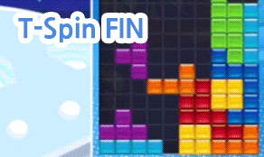

1. 계단쌓기
아래 그림은 계단쌓기를 사용할 수 있는 전형적인 형태입니다. 어떻게 T스핀을 만들 수 있을지 상상해 보시기 바랍니다.
위 상황에서는 아래와 같이 T스핀을 만들 수 있습니다. 이렇게
왼쪽 형태에서는 S미노로 T스핀의 토대를 만드는 것이 핵심입니다. 참고로 초록색 미노가 S처럼 생겨서 S미노입니다.
이렇게 계단 형태의 공간에 S미노나 Z미노를 이용해 T스핀을 만드는 기술을 계단쌓기라고 합니다.
지붕은 NEXT의 상황에 따라 다양하게 만들 수 있습니다.
2. STSD
아래 그림은 STSD의 기본 골격입니다. 쉬운 형태니까 오른쪽과 왼쪽 모두 활용할 수 있도록 연습해 두시면 좋겠습니다.
왼쪽 그림은 T미노가 왼쪽에서 들어가고, 오른쪽 그림은 T 미노가 오른쪽에서 들어갑니다. 특히 위 처럼 O, L, J 미노로 만드는 형태가 기본 중의 기본입니다.
아래 그림은 실제로 STSD를 사용하는 모습입니다. T미노를 회전할 때에는 방향을 꼭 지키셔야 합니다.
왼쪽에서 들어가는 경우에는 좌회전(반시계방향 회전)으로 넣는다고 생각하시면 됩니다.
형태가 매우 알기 쉬워서 초보자부터 초고급자까지 매우 자주 사용하게 되는 빌드입니다. 어느 정도 기초 단계를 벗어났다면 꼭 배워서 사용해 보시기 바랍니다.
3. 도네이팅
도네이팅 (Donating) 또는 도네이션(Donation)은 T스핀을 위해 아래 구멍을 일부러 막았다가 T스핀으로 그 구멍을 다시 여는 기술입니다. 일본어 사이트에서는 Donate(도네이트)를 일본식으로 읽어서 도네이토(ドネイト)라고 부릅니다.
우선 간단한 예시를 보면서 개념을 익힙니다. 아래 상황에서 T스핀을 만드는 방법을 떠올려 봅시다.
아래 그림처럼 바닥에 붙어 있다고 생각하면 조금 더 쉽게 떠올릴 수 있을 것입니다.
하지만 높이 있다는 것만으로도 T스핀 방법을 떠올리는 것이 조금씩 어려워집니다.
그리고 이렇게 T스핀을 마치면 막혀 있던 길이 다시 열립니다.
도네이팅은 이렇게
구멍을 일부러 잠시 막았다가 T스핀을 하면서 다시 여는 기술입니다.
구멍을 일부러 막는다는 점에서 위험 부담이 있고, 따라서 NEXT를 확실하게 볼 수 있는 능력이 필요합니다.이렇게 NEXT를 많이 보아야 하는 기술이기 때문에 초보 분들은 사용하기 어려운 기술입니다.
하지만 익혀두면 T스핀 기회를 엄청나게 늘릴 수 있으므로 할 수만 있다면 테트리스 실력 증진에 정말 큰 도움이 됩니다.
4. 임페리얼 크로스
임페리얼 크로스는 필살기 같은 이름이 붙어 있지만, 별 건 아니고 십자가 모양이 나와서 붙은 이름입니다. 개막 형태로는 잘 사용하지 않고, 게임 중간에 적당한 형태가 되면 사용합니다.
임페리얼 크로스의 기본 형태입니다. 모양 자체는 쉽습니다. 십자가 모양의 공간에 지붕을 씌우면 됩니다. 저기에 첫 번째 T스핀을 옆으로 하면 또 T스핀 형태가 나옵니다. 회전 방법은 아래와 같습니다.
5. T스핀 예측, 예언 T스핀
위 그림을 보면, 두 번째에 O미노를 올려 놓은 것을 보실 수 있습니다. 이건 줄이 없어지면 T스핀 형태가 생길 것을 예측하고 한 플레이입니다. 이렇게
줄을 없앤 후에 T스핀 형태가 생길 것을 미리 예측하고 플레이하는 것을 영어권 사이트에서는
T-Spin Forecast라고 부릅니다.
T스핀 예측은 줄을 없앤 후에 T스핀이 되어야 하기 때문에, 당장 블럭을 쌓을 곳뿐만 아니라 아래의 구멍까지 봐야 하는 기술입니다.
위 그림 왼쪽은 T스핀 지붕을 먼저 만든 것입니다. 이후 오른쪽에 J미노를 놓음으로써, T스핀 형태가 완성되었습니다.
이렇게
T스핀 지붕을 먼저 만들고 베이스를 나중에 만드는 것을
Prophecy T-Spin이라고 합니다.
6. STMB 케이브, 스카이 프랍
STMB 케이브는 서로 떨어진 미노 사이에 다리를 놓고 T스핀 형태를 만드는 것을 말합니다. 아래 그림처럼 기본적으로 공간이 3칸 있을 때 사용합니다.
주로 위 그림처럼 S미노나 Z미노로 다리를 만드는 경우가 많지만, 상황에 따라서는 아래 그림처럼 I미노를 다리로 놓고 T스핀을 만들기도 합니다.
그리고 유사 형태인
스카이 프랍은
공간이 2칸 있을 때 다리를 놓아 스핀을 만드는 기술입니다.
7. T스핀 ISO·FIN·NEO
일단 셋의 차이를 간단히 그림으로 정리했습니다.
참고로 사라지는 줄이 두 줄이면 T스핀 더블이고, 한 줄이면 T스핀 싱글이 됩니다. 그림만 봐서는 저게 되냐고 의심하실 수 있습니다. 그래서 실제 게임에서 사용하는 모습을 움짤로 보여드립니다.
잘 보시면, T스핀 NEO는 미니 티스핀으로 처리되는 걸 보실 수 있습니다. 따라서 실전에서는 NEO보다는 ISO나 FIN을 사용하시는 게 좋습니다. 특히 FIN은 형태가 매우 간단하기 때문에, 활용 가능성이 높습니다. 꼭 익혀서 실전에서 써보시기 바랍니다. T스핀 가능성이 많이 늘어납니다.
T스핀 FIN·ISO·NEO 이후에 구멍이 생겼으니 복구를 해야 합니다. 복구 방법은 다양하지만, 가장 알기 쉽게 복구하는 방법은 아래와 같습니다.
경우에 따라서는 L스핀을 써야할 수도 있습니다. 예를 들자면 다음과 같습니다.
아래 S스핀은 우회전-우회전, 우회전-좌회전, 좌회전-좌회전으로 넣을 수 있습니다.
